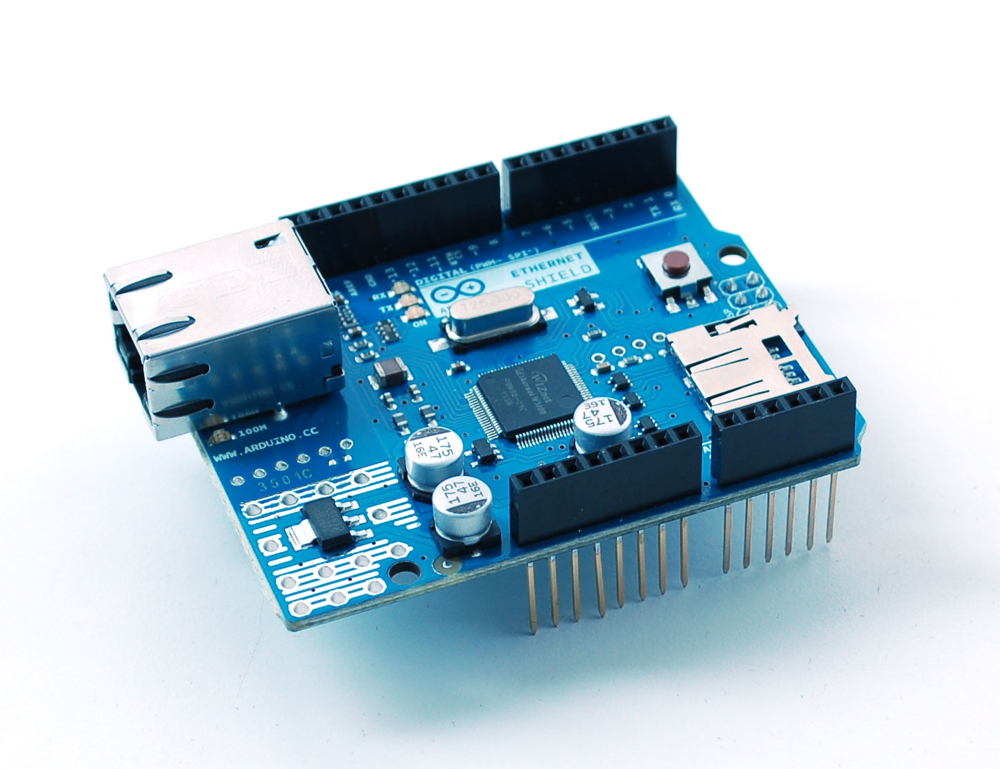

Arduino 101
Jonathan Rice / @jricesterenator
What are we going to do?
- Arduino basics
- Circuit design
- Analog & Digital I/O
- Serial I/O
Schedule
- Arduino
- Hardware Basics
- Lab 1 - Hello World!
- Lab 2 - Multiple LEDs
- Lab 3 - Digital IO, Buttons, Serial Debugging
- Lab 4 - Analog IO, Pots
- Demo 5 - Light Sensors
- Lab 6 - IR Object Detection
- Lab 7 - Simon
- Lab 8 - Simon Says (Serial Input)
What is Arduino?


Image Credit: http://www.adafruit.com/products/418?gclid=CLDGirSsybkCFUPl7AodH1IA2Q
Image Credit: http://arduino.cc/en/Main/arduinoBoardLilyPad
Image Credit: http://arduino.cc/en/Main/ArduinoBoardNano
Why Arduino?
Shields
Ethernet, Bluetooth, Wifi, GSM, motors...

Image Credit: http://www.adafruit.com/products/201?gclid=CNnE1aGrybkCFSZp7Aod3BoAYA
Image Credit: http://www.amazon.com/Bluetooth-Shield-for-Arduino/dp/B007BYI172
Image Credit: http://arduino.cc/en/Main/ArduinoGSMShield
Why not Arduino?
Today's Project
Program Flow
#define LED 3
#define BUTTON 4
void setup() {
pinMode(LED_PIN, OUTPUT);
pinMode(BUTTON, INPUT);
}
void loop() {
int val = digitalRead(BUTTON);
digitalWrite(LED_PIN, val);
delay(100):
}
//Your #defines...
void setup();
void loop();
int main() {
setup();
while(1) {
loop();
}
}
void setup() { /* Your setup code... */ }
void loop() { /* Your loop code... */ }
Hardware Basics
Parts we'll be using today
Image Credit: http://www.flashlightblog.com/quick-guide-to-led-flashlights/
Image Credit: http://www.galco.com/buy/Precision-Electronic-Components/ku5011s28
Image Credit: http://simplestick.blogspot.com/2012/08/simple-stick-overview.html
Image Credit: http://ecee.colorado.edu/~mathys/ecen1400/labs/resistors.html
Resistor Color Codes
- 220 ohm - Red, Red, Brown
- 470 ohm - Yellow, Purple, Brown
- 10K ohm - Brown, Black, Orange
http://www.digikey.com/web%20export/mkt/general/mkt/resistor-color-chart.jpg
Reading a Schematic
Let's begin...
Lab 1
Hello, World!
- Toolchain / Workflow
- Digital Output
- Current limiting resistors
Everyone have Arduino IDE installed?
Digital Output
#define LED_1 2 //Define pin
void setup() {
pinMode(LED_1, OUTPUT); //Set Pin 2 as digital OUTPUT
}
void loop() {
digitalWrite(LED_1, HIGH); //Turn LED on
delay(1000); //Pause for 1 second
digitalWrite(LED_1, LOW); //Turn LED off
delay(1000;
}
Lab 1 Schematic
Lab 2
Multiple LEDs
- Reinforce LEDs & Digital Output
- Functions
Functions
void loop() {
if( thisIsAFunction() ) {
//Huzzah.
}
}
boolean thisIsAFunction(int val) {
return true;
}
//Blink the given LED like Lab 1. Pass in the LED pin# and delay time.
void flashLED(int ledPin, int delayTime) { ... }
//Call this from loop() and blink each LED.
void cycleLEDs() {
//Blink LED 1
//Blink LED 2
//Blink LED 3
}
Lab 2 Schematic
Lab 3
Digital Input, Buttons,
Serial Debugging
- Digital Input
- Buttons
- Pull-up / Pull-down Resistors
- Serial Debugging
Digital Input
pinMode(<pin>, INPUT);
digitalRead(<pin>, <LOW|HIGH>);
Buttons
Image Credit: http://www.galco.com/buy/Precision-Electronic-Components/ku5011s28
Pull-up / Pull-down Resistors
Pull-Up / Pull-Down
Normally Open (NO) / Normally Closed (NC)
Serial Debugging
void setup() {
//Enable serial. 9600 baud rate.
Serial.begin(9600);
}
void loop() {
Serial.print("This will print");
Serial.print(" on the same line.");
Serial.println("There's a newline after this.");
Serial.println("So this is on a new line.");
}
This will print on the same line.There's a newline after this.
So this is on a new line.
Lab 3 Schematic
- Read button and output to serial
- Experiment with pull-up / pull-down
Click Detection
What is a "click"?
Go ahead, add click detection and output "Button clicked".
...Notice anything strange?
Debouncing
- delay()
- Sampling delay
Go, add 100 ms delay.
Lab 4
Analog IO, Potentiometers
Potentiometers (Pots)
Logarithmic vs Linear
Analog IO
/* Analog INPUT */
//pinMode(); //Not necessary for Analog pins
analogRead(<pin>); //Returns a value from 0-1023.
/* Analog OUTPUT */
pinMode(<pin>, OUTPUT); //Any PWM pin
analogWrite(<pin>, value); //0-255
int scaledVal = map(int value, int fromLow, int fromHigh, int toLow, int toHigh);
Lab 4 Schematic
- Read pot input and write to serial
- Write to LED
Demo 5
Light Sensors
Demo 5.1 - Photoresistor
Demo 5.2 - LED as Light Sensor
Lab 6
IR Object Detection
- IR Light Sensor
- Analog Input Multiplexing
IR
Lab 6.1 - IR Emitter
Lab 6.2 - IR Receiver
int readLightLevel() {
analogRead(LIGHT); //Switch to LIGHT input pin
delay(50); //Give it time to settle
int lightVal = analogRead(LIGHT); //This is a good read
return lightVal;
}
Lab 6.3
- Account for Analog MUX'ing
- Trigger LED from light levels
Lab 7
Simon
- Random()
- Importing Libraries
Random()
int random(<lowVal>, <highVal>); //highVal is non-inclusive
#define UNUSED_ANALOG_PIN
void setup() {
//Seed RNG with noise from an unused analog input
randomSeed(analogRead(UNUSED_ANALOG_PIN));
}
void loop() {
/* http://arduino.cc/en/Reference/random */
//Generate a random number: 0,1,2
int rand = random(0, 3);
//...
}
Importing Libraries
#include <pitches.h>
Lab 7 - Simon
Lab 8
Serial Input
Serial Input
boolean Serial.available(); //Is data available?
int charCode = Serial.read(); //Read one byte as int
char c = Serial.read(); //Read one byte as char
Example 1
String msg = "";
while(Serial.available()) {
char c = Serial.read();
msg += c;
}
Serial.print("You entered: ");
Serial.println(msg);
Example 2
String msg = "";
while(Serial.available()) {
char c = Serial.read();
if(c == '\r') //Ignore CR
continue;
if(c == '\n') //Message ends with newline
break;
msg += c;
}
Serial.print("You entered: ");
Serial.println(msg);
Lab 8.1
- Create new project
- Write Echo program
- Interact using Serial Console
pySerial
List Ports
python -m serial.tools.list_ports
$ python -m serial.tools.list_ports
/dev/tty.usbmodemfd121
1 port found
I/O
import serial
#Connect
ser = serial.Serial('/dev/tty.usbmodemfd121', 9600)
#Write
ser.write("This is a message.")
ser.sendBreak()
#Read
c = serial.read()
lines = serial.readlines()
ser.close()
Lab 8.2 - pySerial
- Create an serial echo sketch
- Run the pySerial demo
- See messages appear in Arduino Serial Console
Lab 8.3 - Simon Says
- Load the lab 8.3 Simon Says sketch
- Run the pySerial demo
- Send commands to the Simon game
WAVE IT
PUSH IT
PUSH IT
TWIST IT
END
What's Next?
- Copy cool projects
- Prototyping --> Production
- Soldering
- Circuit board etching
Resources
Getting Started with Arduino, Massimo Banzi